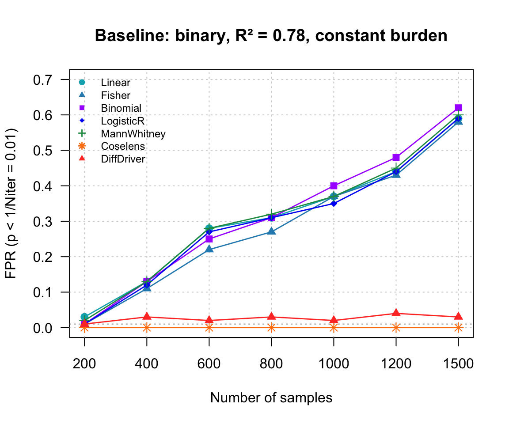
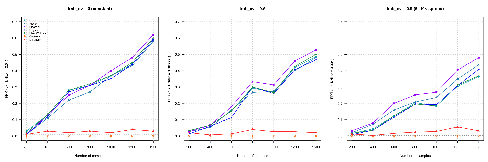
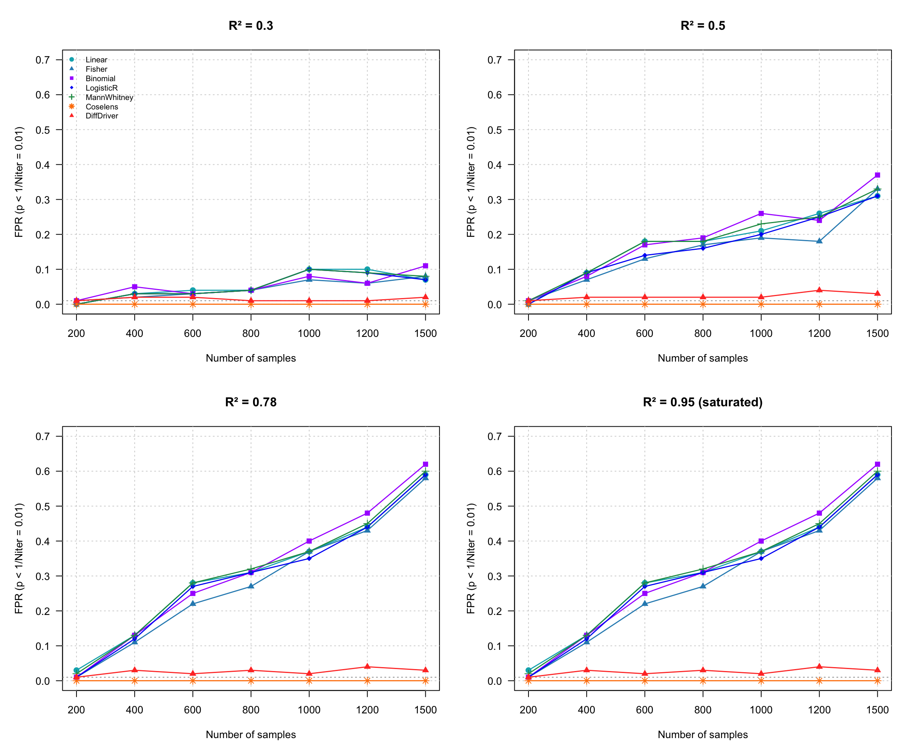
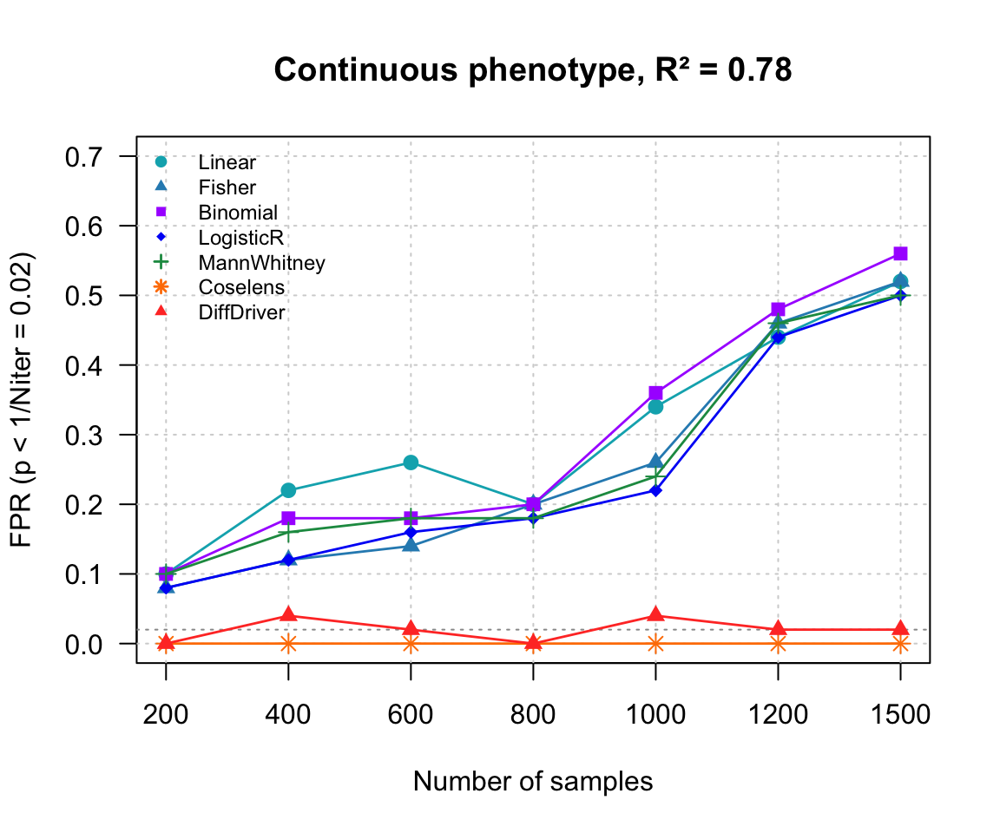
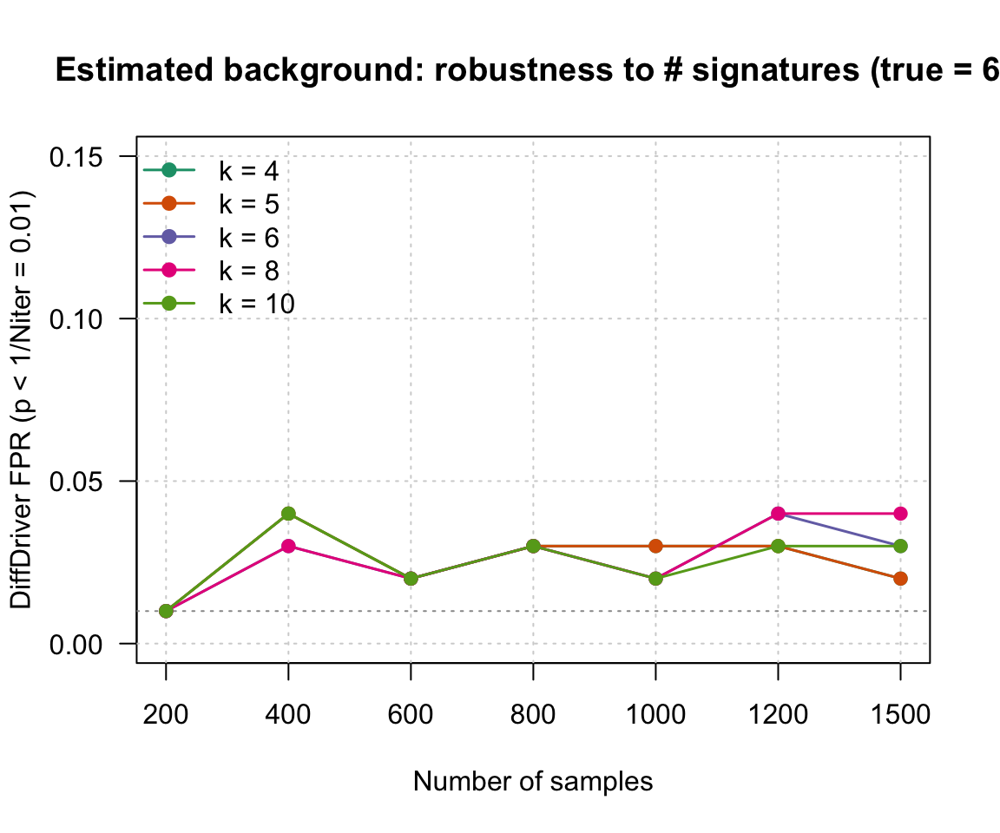

Last updated: 2026-07-26
Checks: 6 1
Knit directory: DiffDriver-PAPER/
This reproducible R Markdown analysis was created with workflowr (version 1.7.1). The Checks tab describes the reproducibility checks that were applied when the results were created. The Past versions tab lists the development history.
The R Markdown file has unstaged changes. To know which version of
the R Markdown file created these results, you’ll want to first commit
it to the Git repo. If you’re still working on the analysis, you can
ignore this warning. When you’re finished, you can run
wflow_publish to commit the R Markdown file and build the
HTML.
Great job! The global environment was empty. Objects defined in the global environment can affect the analysis in your R Markdown file in unknown ways. For reproduciblity it’s best to always run the code in an empty environment.
The command set.seed(20260206) was run prior to running
the code in the R Markdown file. Setting a seed ensures that any results
that rely on randomness, e.g. subsampling or permutations, are
reproducible.
Great job! Recording the operating system, R version, and package versions is critical for reproducibility.
Nice! There were no cached chunks for this analysis, so you can be confident that you successfully produced the results during this run.
Great job! Using relative paths to the files within your workflowr project makes it easier to run your code on other machines.
Great! You are using Git for version control. Tracking code development and connecting the code version to the results is critical for reproducibility.
The results in this page were generated with repository version cefd056. See the Past versions tab to see a history of the changes made to the R Markdown and HTML files.
Note that you need to be careful to ensure that all relevant files for
the analysis have been committed to Git prior to generating the results
(you can use wflow_publish or
wflow_git_commit). workflowr only checks the R Markdown
file, but you know if there are other scripts or data files that it
depends on. Below is the status of the Git repository when the results
were generated:
Ignored files:
Ignored: .DS_Store
Ignored: .claude/
Ignored: analysis/.Rhistory
Ignored: code/.Rhistory
Ignored: data/.DS_Store
Untracked files:
Untracked: data/sgannosig.Rd
Untracked: data/sgmatrixsig.Rd
Unstaged changes:
Modified: analysis/Simulation-BMR-variations.Rmd
Modified: analysis/Simulation-BMR.Rmd
Note that any generated files, e.g. HTML, png, CSS, etc., are not included in this status report because it is ok for generated content to have uncommitted changes.
These are the previous versions of the repository in which changes were
made to the R Markdown
(analysis/Simulation-BMR-variations.Rmd) and HTML
(docs/Simulation-BMR-variations.html) files. If you’ve
configured a remote Git repository (see ?wflow_git_remote),
click on the hyperlinks in the table below to view the files as they
were in that past version.
| File | Version | Author | Date | Message |
|---|---|---|---|---|
| Rmd | cefd056 | Siming | 2026-07-26 | Add iterations to variable-burden variations to reduce noise |
| html | cefd056 | Siming | 2026-07-26 | Add iterations to variable-burden variations to reduce noise |
| Rmd | 3f9450a | Siming | 2026-07-26 | Re-run confounding variations with estimated background |
| html | 3f9450a | Siming | 2026-07-26 | Re-run confounding variations with estimated background |
| Rmd | dfa3eb4 | Siming | 2026-07-26 | Merge estimated-background page into Simulation-BMR |
| html | dfa3eb4 | Siming | 2026-07-26 | Merge estimated-background page into Simulation-BMR |
| Rmd | aa3931b | Siming | 2026-07-26 | Add signature-confounding variations page (burden, R^2, continuous, #signatures) |
| html | aa3931b | Siming | 2026-07-26 | Add signature-confounding variations page (burden, R^2, continuous, #signatures) |
This page stress-tests the phenotype–signature confounding
simulation under several realistic parameter variations. The
baseline is unchanged: binary phenotype, confounder = LUAD
signature 3 (R² = 0.78 with the phenotype), driver
hotspots at the signature’s peak context (nttype 34), single gene
(ERBB3), no selection (so any hit is a false positive).
As on the main
page, DiffDriver and Coselens are
not given the true background — each estimates
it from a per-cohort simulated silent (synonymous) count matrix
(build_silent_matrix → fastTopics /
N_syn per site), exactly as on real data. Each variation
reruns the full 7-method benchmark (100 iterations — 150 and 250 for the
two variable-burden settings, 50 for the continuous variant) over N =
200–1500 and we plot the false-positive rate (FPR) vs. sample size. FPR
is assessed at a significance threshold α = 1/Niter —
the finest level resolvable with Niter iterations, at which
a well-calibrated test yields an expected one false positive — so the
dashed reference line marks the calibrated level for each panel (0.01 at
100 iterations, 0.0067 at 150, 0.004 at 250, 0.02 at 50).
The knobs live in code/simulate_functions.R
(build_confounded_bmr’s tmb_cv for per-sample
burden; simulate_confounding’s binary = FALSE
for a continuous phenotype; rho for the confounding
strength), the estimated-background helpers in
code/simulate_silent_estimate.R, and the variations worker
code/simulate_bmr_variations.R.
load("data/pppower_bmr_variations.Rd") # object `bmrvar`: partA (7 variations), partB (signature-count)
SIZES <- bmrvar$sizes
MCOL <- c(Linear="#00AFBB", Fisher="#2b8cbe", Binomial="#aa00ff", LogisticR="#0001f6",
MannWhitney="#1a9850", Coselens="#ff7f00", DiffDriver="#FF3D2E")
MPCH <- c(Linear=19, Fisher=17, Binomial=15, LogisticR=18, MannWhitney=3, Coselens=8, DiffDriver=17)
# Significance threshold alpha = 1/Niter: the finest level resolvable with Niter
# iterations (a calibrated test then yields an expected one false positive), so the
# dashed reference line marks the calibrated level for each panel.
alpha_of <- function(vlist) { nn <- vapply(vlist, function(d) if (is.null(d)) NA_integer_ else nrow(d), integer(1)); 1/stats::median(nn, na.rm = TRUE) }
fp_by_size <- function(vlist, m) sapply(vlist, function(d) if (is.null(d)) NA else mean(d[[m]] < 1/nrow(d), na.rm = TRUE))
plot_fp <- function(vlist, title = "", methods = names(MCOL), legend = TRUE, ymax = 0.7) {
x <- seq_along(SIZES); al <- alpha_of(vlist)
plot(NA, xlim = c(1, length(SIZES)), ylim = c(0, ymax), xaxt = "n",
xlab = "Number of samples", ylab = sprintf("FPR (p < 1/Niter = %.4g)", al), main = title, las = 1)
axis(1, x, SIZES); grid(); abline(h = al, lty = 3, col = "grey60")
for (m in methods) { y <- fp_by_size(vlist, m); lines(x, y, col = MCOL[m], lwd = 1.4); points(x, y, col = MCOL[m], pch = MPCH[m], cex = 1.1) }
if (legend) legend("topleft", methods, col = MCOL[methods], pch = MPCH[methods], lwd = 1.4, lty = NA, bty = "n", cex = 0.75)
}For reference, the baseline confounding benchmark (same as the Simulation-BMR figure): count-based methods increasingly false-positive with sample size, while Coselens and DiffDriver stay controlled.

Real tumors vary widely in mutation burden. Here each sample’s whole
signature loading vector is multiplied by an independent mean-1
log-normal factor (coefficient of variation tmb_cv), so
samples get very different total mutation counts while the
confounded signature composition is preserved.
Result: adding realistic burden variation (up to
~5–10× spread at tmb_cv = 0.9) leaves the picture
essentially unchanged — the count-based methods still false-positive
with sample size, and Coselens/DiffDriver stay controlled. The
confounding is a property of the signature composition, not the
per-sample total, so burden noise does not rescue the count-based
tests.
par(mfrow = c(1, 3), mar = c(5, 5, 4, 1))
plot_fp(bmrvar$partA$baseline, "tmb_cv = 0 (constant)")
plot_fp(bmrvar$partA$tmb_cv0.5, "tmb_cv = 0.5", legend = FALSE)
plot_fp(bmrvar$partA$tmb_cv0.9, "tmb_cv = 0.9 (5–10× spread)", legend = FALSE)
Sweeping the phenotype–signature correlation R² ∈ {0.3, 0.5, 0.78, 0.95}.
Result: the count-based false-positive rate scales with the confounding strength — weak confounding (R² = 0.3) gives only a mild inflation (~10% at N = 1500), R² = 0.5 gives ~35%, and R² ≥ 0.78 saturates around ~60%. The saturation is expected for a binary phenotype: once R² is high enough to fully separate cases from controls by signature loading, increasing it further changes nothing (R² = 0.78 and 0.95 are essentially identical). Coselens and DiffDriver remain controlled at every level.
par(mfrow = c(2, 2), mar = c(5, 5, 4, 1))
plot_fp(bmrvar$partA$R2_0.3, "R² = 0.3")
plot_fp(bmrvar$partA$R2_0.5, "R² = 0.5", legend = FALSE)
plot_fp(bmrvar$partA$baseline, "R² = 0.78", legend = FALSE)
plot_fp(bmrvar$partA$R2_0.95, "R² = 0.95 (saturated)", legend = FALSE)
Instead of a binary case/control phenotype, a continuous phenotype ~
N(0,1) is confounded with the signature-3 loading at R² = 0.78. The
count-based methods dichotomize the phenotype at its mean (as in the
power simulation), Coselens splits at the median, and DiffDriver uses
the continuous ddmodel.
Result: the confounding still fools the count-based methods (rising toward ~40–55% at N = 1500 — somewhat lower than the binary case because the dichotomization discards the continuous gradient), while DiffDriver (≤ 4%) and Coselens (≈ 0%) stay controlled. (This variant uses 50 iterations, so its threshold α = 1/50 = 0.02 is the loosest of the panels.)

| Version | Author | Date |
|---|---|---|
| aa3931b | Siming | 2026-07-26 |
In the estimated-background
simulation, DiffDriver does not receive the true background — it
estimates it by fitting a mutational- signature model
(fastTopics) to the simulated silent count matrix. The silent mutations
here are generated under 6 LUAD signatures. This
variation asks how sensitive DiffDriver’s false-positive control is to
the number of fitted signatures k: we refit with k
= 4, 5, 6, 8, 10 and measure DiffDriver’s estimated-background FPR.
Result: DiffDriver’s control is robust to misspecifying k — fitting too few (k = 4) or too many (k = 10) signatures, versus the true 6, all keep the FPR at ~1–4% across sample sizes. The signature-count choice is not a fragile knob.
ks <- names(bmrvar$partB); kcols <- c("#1b9e77","#d95f02","#7570b3","#e7298a","#66a61e")
x <- seq_along(SIZES)
al <- 1/median(sapply(bmrvar$partB[[1]], nrow)) # alpha = 1/Niter (100 iters -> 0.01)
plot(NA, xlim = c(1, length(SIZES)), ylim = c(0, 0.15), xaxt = "n",
xlab = "Number of samples", ylab = sprintf("DiffDriver FPR (p < 1/Niter = %.4g)", al),
main = "Estimated background: robustness to # signatures (true = 6)", las = 1)
axis(1, x, SIZES); grid(); abline(h = al, lty = 3, col = "grey60")
for (i in seq_along(ks)) {
y <- sapply(bmrvar$partB[[ks[i]]], function(d) mean(d$diff_est < 1/nrow(d), na.rm = TRUE))
lines(x, y, col = kcols[i], lwd = 1.5); points(x, y, col = kcols[i], pch = 19)
}
legend("topleft", paste("k =", sub("k", "", ks)), col = kcols, pch = 19, lwd = 1.5, bty = "n")
| Version | Author | Date |
|---|---|---|
| aa3931b | Siming | 2026-07-26 |
All methods estimate the background from the
simulated silent count matrix (Coselens via N_syn/Lsyn96,
DiffDriver via fastTopics), as on real data.
FPR is measured at α = 1/Niter (see Overview); the “≈0%” / “≤x%” figures below are the maxima across N at that per-panel threshold.
| Variation | Count-based methods | Coselens | DiffDriver |
|---|---|---|---|
| Baseline (R²=0.78) | false-positive, →~60% at N=1500 | controlled (≈0%) | controlled (≤4%) |
| Variable burden (tmb_cv 0.5, 0.9) | still false-positive (~50–60%) | controlled (≈0%) | controlled (≤6%) |
| Confounding strength R² | scales with R²: 0.3→~10%, 0.5→~35%, ≥0.78→~60% (saturates) | controlled (≈0%) | controlled (≤4%) |
| Continuous phenotype | false-positive (→~40–55%) | controlled (≈0%) | controlled (≤4%) |
| # signatures (estimated bkg) | — | — | robust: ~1–4% for k = 4…10 |
Across every realistic variation, the count-based benchmarks remain vulnerable to the phenotype–signature confounding, while DiffDriver and Coselens, both estimating the confounded background from silent mutations, keep the false positive rate controlled — and DiffDriver’s estimated-background control is insensitive to the number of fitted signatures.
R version 4.3.2 (2023-10-31)
Platform: aarch64-apple-darwin20 (64-bit)
Running under: macOS Sonoma 14.6.1
Matrix products: default
BLAS: /System/Library/Frameworks/Accelerate.framework/Versions/A/Frameworks/vecLib.framework/Versions/A/libBLAS.dylib
LAPACK: /Library/Frameworks/R.framework/Versions/4.3-arm64/Resources/lib/libRlapack.dylib; LAPACK version 3.11.0
locale:
[1] en_US.UTF-8/en_US.UTF-8/en_US.UTF-8/C/en_US.UTF-8/en_US.UTF-8
time zone: America/New_York
tzcode source: internal
attached base packages:
[1] stats graphics grDevices utils datasets methods base
other attached packages:
[1] workflowr_1.7.1
loaded via a namespace (and not attached):
[1] vctrs_0.6.5 httr_1.4.8 cli_3.6.5 knitr_1.51
[5] rlang_1.1.6 xfun_0.52 stringi_1.8.7 otel_0.2.0
[9] processx_3.8.5 promises_1.5.0 jsonlite_2.0.0 glue_1.8.0
[13] rprojroot_2.0.4 git2r_0.36.2 htmltools_0.5.9 httpuv_1.6.15
[17] ps_1.8.1 sass_0.4.10 rmarkdown_2.29 jquerylib_0.1.4
[21] tibble_3.3.1 evaluate_1.0.5 fastmap_1.2.0 yaml_2.3.12
[25] lifecycle_1.0.5 whisker_0.4.1 stringr_1.6.0 compiler_4.3.2
[29] fs_1.6.6 pkgconfig_2.0.3 Rcpp_1.1.0 rstudioapi_0.17.1
[33] later_1.4.8 digest_0.6.39 R6_2.6.1 pillar_1.11.1
[37] callr_3.7.6 magrittr_2.0.3 bslib_0.10.0 tools_4.3.2
[41] cachem_1.1.0 getPass_0.2-4